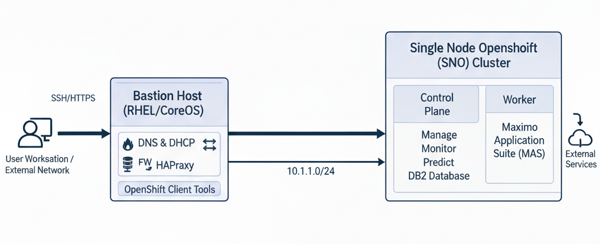

Welcome¶
This documentation provides a step-by-step installation guide for deploying a Single Node OpenShift (SNO) cluster backed by a dedicated Bastion Host running all supporting infrastructure services. It is designed as a hands-on training companion for engineers preparing to deploy OpenShift and IBM Maximo Application Suite (MAS) in enterprise environments.
What You Will Build¶
By the end of this guide, you will have a fully operational environment consisting of:
| Component | Role | IP Address |
|---|---|---|
| Bastion Host | DNS, DHCP, HAProxy, OC CLI | 192.168.83.10 (internal) |
| SNO Node (sno1) | Control Plane + Worker (all-in-one) | 192.168.83.20 |
| External Network | Upstream connectivity | 10.1.1.0/24 |
Architecture¶

The Bastion Host acts as the gateway and infrastructure services provider for the internal 192.168.83.0/24 network. It runs:
- BIND DNS — Forward & reverse zone resolution for
ocp.local/sno.ocp.local - ISC DHCP — MAC-based static IP assignment for the SNO node
- HAProxy — Layer 4 load balancing for API (6443), MCS (22623), HTTP/S (80/443)
- firewalld — Zone-based firewall with NAT/masquerade between internal & external
Prerequisites¶
Before You Begin
Ensure the following are available before starting the installation:
- RHEL 8/9 server (or compatible) for the Bastion Host with two NICs
ens192→ External network (10.1.1.0/24)ens224→ Internal network (192.168.83.0/24)
- Bare-metal server or VM for the SNO node with minimum:
- 16 vCPU, 64 GB RAM, 120 GB OS disk + 500 GB secondary disk (SSD preferred)
- Single NIC on the internal network
- Red Hat pull secret from console.redhat.com
- Internet access (direct or via proxy) from the Bastion Host
- DNS domain planned:
ocp.local(base) /sno.ocp.local(cluster)
Guide Structure¶
The guide is organized into logical phases:
-
Bastion Host Setup
Configure the Bastion as the infrastructure backbone — firewall zones, DNS, DHCP, and HAProxy.
-
OpenShift Installation
Download OCP tools, prepare
install-config.yaml, generate manifests, and boot the SNO node. -
Post-Installation
Validate the cluster, run smoke tests, and troubleshoot common issues.
-
:material-ibm:{ .lg .middle } MAS Installation
Prepare storage, licensing, and deploy IBM Maximo Application Suite via the CLI automation tool.
Quick Reference — Key Endpoints¶
Once the cluster is fully operational, these are the primary access points:
| Endpoint | URL / Address |
|---|---|
| OpenShift Console | https://console-openshift-console.apps.sno.ocp.local |
| OAuth Server | https://oauth-openshift.apps.sno.ocp.local |
| API Server | https://api.sno.ocp.local:6443 |
| HAProxy Stats | http://bastion.ocp.local:9000/stats |
| Machine Config Server | https://api-int.sno.ocp.local:22623 |
Training Tip
This guide follows the actual configuration files and commands used during the Technical Training — OpenShift/MAS Series. All config files are included inline and also available in the repository subdirectories (DNS_SNO/, DHCP_SNO/, HAproxy_SNO/).